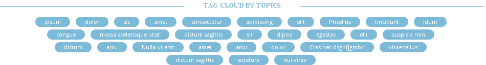

QA
How to suck less
Guidelines
- Keep it simple
- At least one test per day
- Not more than one hour a day
- Access always comes with tests
Behat
Feature: Blog post
In order to be able to view a blog post
As an anonymous user
We need to be able to have access to a blog post page
@api
Scenario Outline: Visit blog post page
Given I am an anonymous user
When I visit "<url>"
Then I should the text "<text>" under the main content
And I should see the author "<author>"
Examples:
| url | text | author |
| content/automatic-qa/ | Here is a known fact | Amitai Burstein |
| content/phantomcss-ui-regression/ | What's fun about having | Amitai Burstein |
| content/backend-free-apps-grunt-jekyll-d3js/ | When we started working | Carlos Mantilla |
PhantomCSS
casper.start('http://localhost/sekelton/www');
casper.then(function() {
// ...
this.echo('Verify the tags cloud box');
phantomcss.screenshot('.tags-cloud-wrapper', 'tags-cloud-wrapper');
});
// Check hover.
casper.then(function() {
this.echo('Verify tags cloud - hover');
this.mouse.move('.tags-cloud li a');
phantomcss.screenshot('.tags-cloud li a', 'tags-cloud-hover');
});
Tags wrapper

Hover
What's next